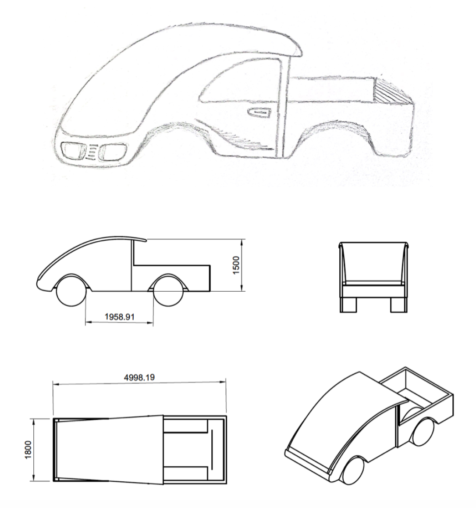
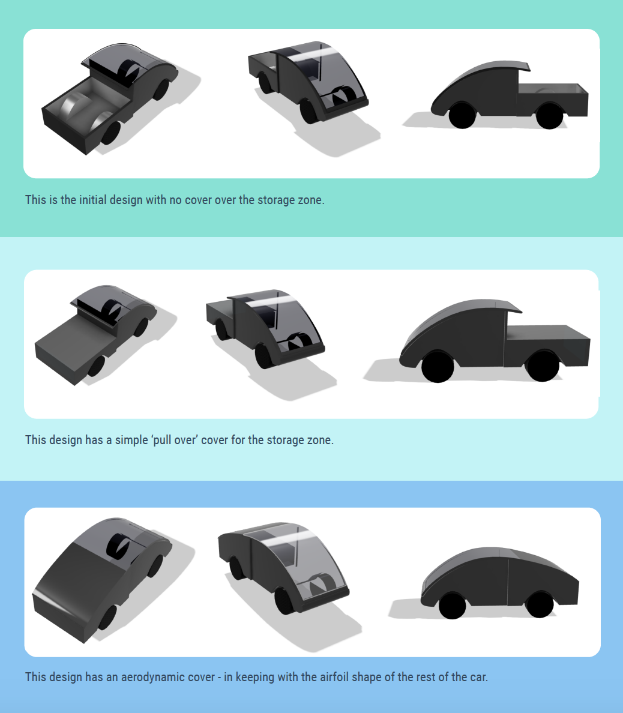
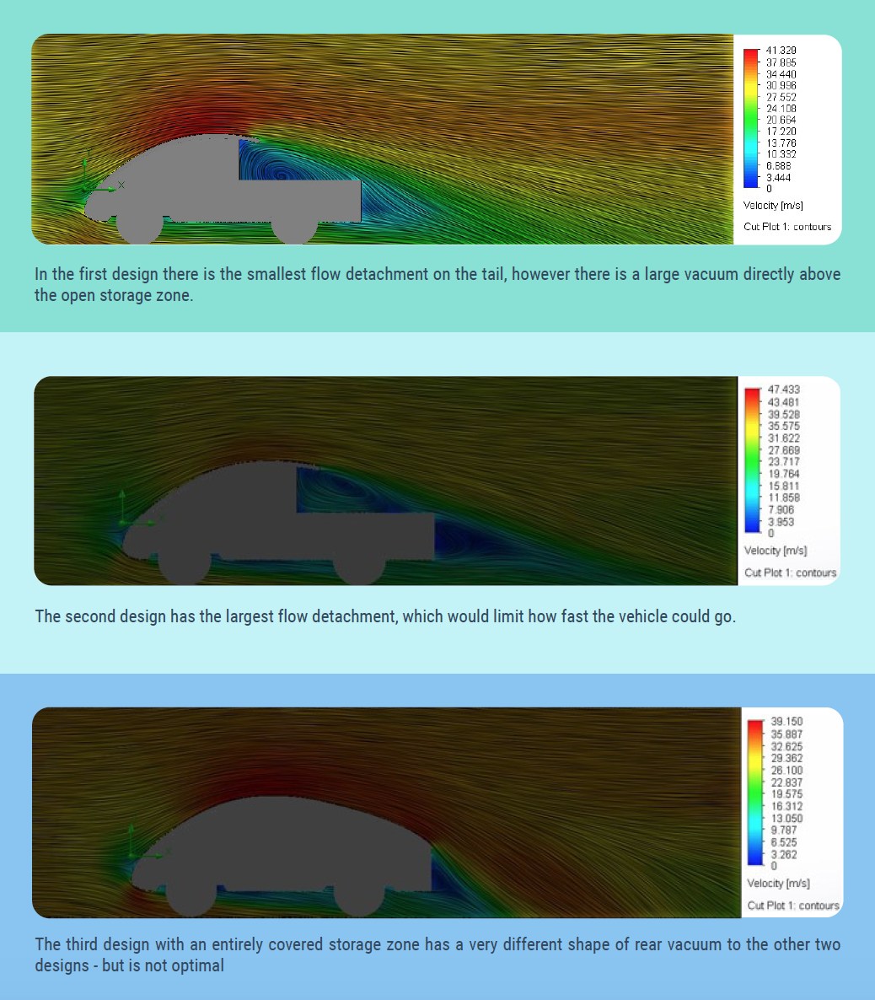
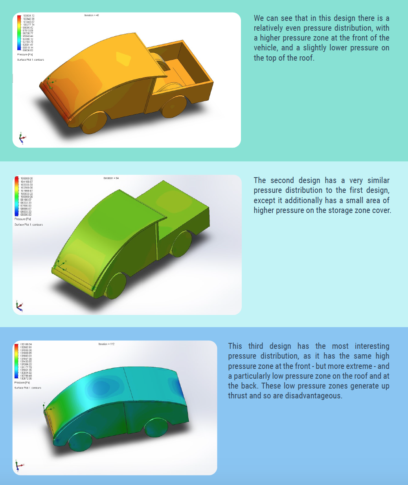
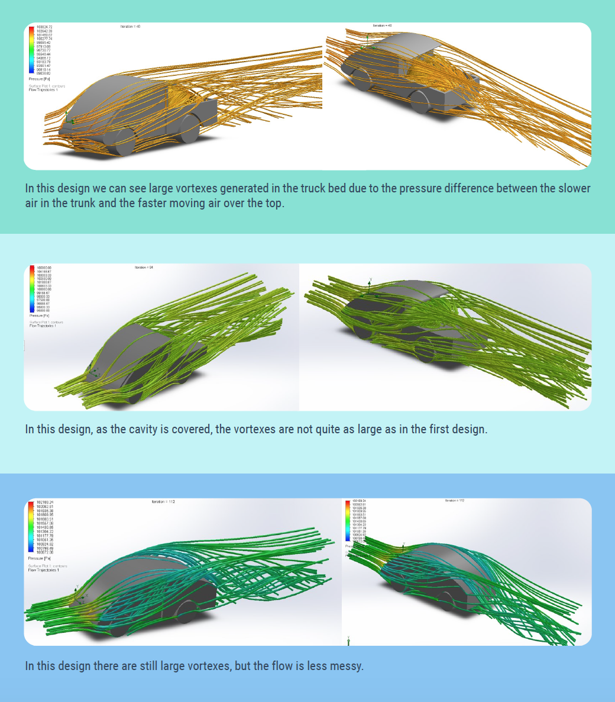
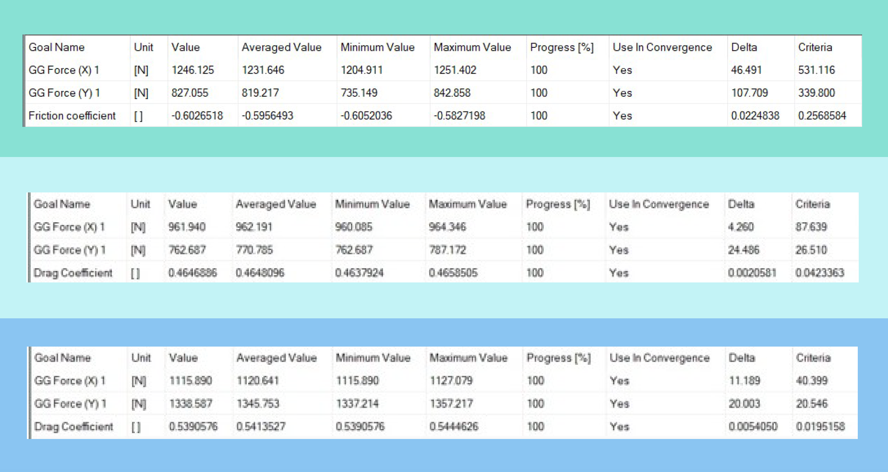
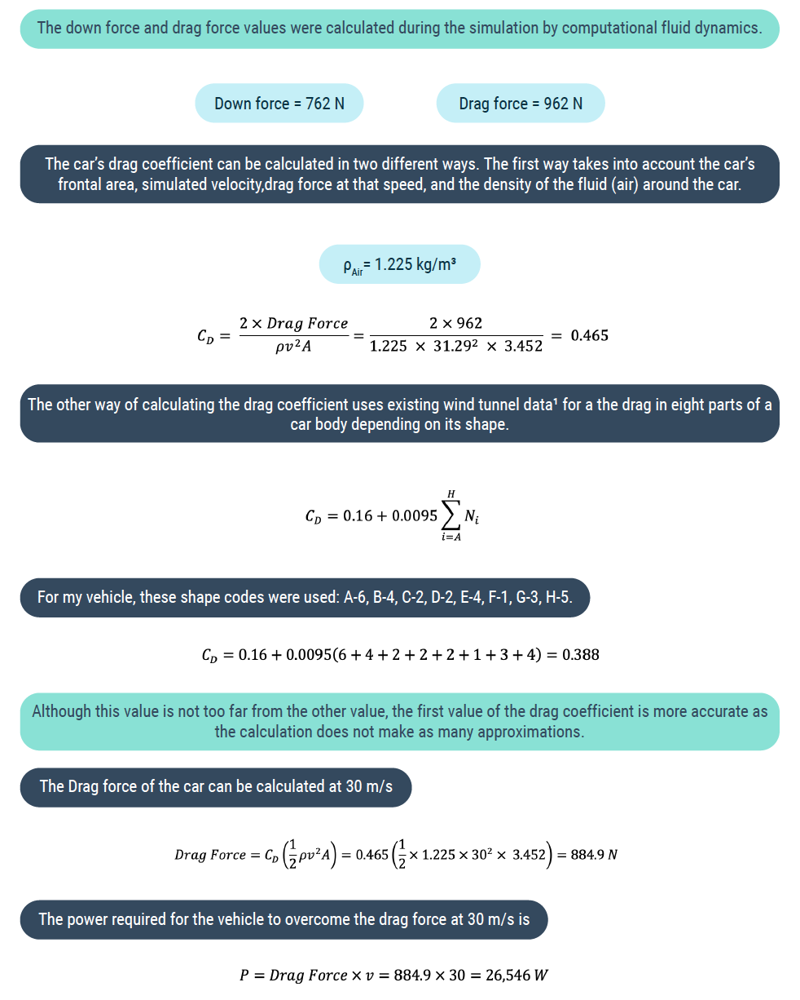

Louis Cutner
I wanted to make a pick-up truck as Mater is my favourite character from the movie ‘Cars’, but I
thought he needed a bit of an update for this modern era. The car needs the ability to take cargo,
but should be aerodynamic and sleek looking so that Mater can feel cool as Lightening McQueen.
Also, I wanted a windscreen panel that went over the entire roof to make the car look very futuristic
and smooth in air flow. This would mean that Mater wouldn’t need another update for a long time.
I also didn’t want to make the design overly futuristic or complex as I don’t think that would fit
Mater’s personality.
I decided to create three different models so that I could explore the effects of two different types
of cover over the pickup zone on the drag and flow. Design one had no cover, design 2 had a simple
cover, and design 3 had an aerodynamic cover.
I initially performed 2D pressure and velocity analysis on the different designs, and of note were the
different flow detachments formed. I also looked at the flow trajectories of all 3 designs. When
looking at the goal results it was apparent that the second design was optimal for Mater to use as
it has the smallest value of drag, down force and the lowest drag coefficient. Calculations were
then performed on this design, determining the coefficient of drag in two different ways, and
determining the drag force and hence power required for the car.
DRAWINGS
In the initial drawings, I wanted to ensure the pickup zone was encorporated, but also create a sleek
design for the car - hence why I have chosen to have a front glass pannel exteending all the way
over the roof, along with a very simple and minimalistic design.

CAD MODEL
Based on my initial drawings, I modelled my car in Fusion 360, and created renders in a sleek black colour to
look
futuristic and stylish to fit Mater’s personality. I decided to create three different models so that I could
explore the
effects of two different types of cover over the pickup zone on the drag and flow.

VELOCTIY ANALYSIS
Mater will have to drive at fast speeds on the motor way frequently and so I performed 2D pressure and velocity
analyses to determine if my design was fit for Mater to use. It is interesting to see that with the three
different designs
there is a very different rear vacuum.

PRESSURE ANALYSIS
I want Mater’s new design to last him for many years, so I performed a surface pressure analysis to ensure that
the
design was robust and would perform well.

FLOW TRAJECTORIES
Mater will want to be fuel efficient, so to look at the air flow around the vehicle I analysed the flow
trajectories to
explore how the different shapes of the trunks’ would divert air differently - creating different vortexes.

GOAL RESULTS
From the goal results it is apparent that design 2 is the best for Mater, as it has the smallest vallue of down
force, the
smallest value of drag, and the smallest value of the drag coefficient.

CALCULATIONS
Below are calculations for car design 2.
